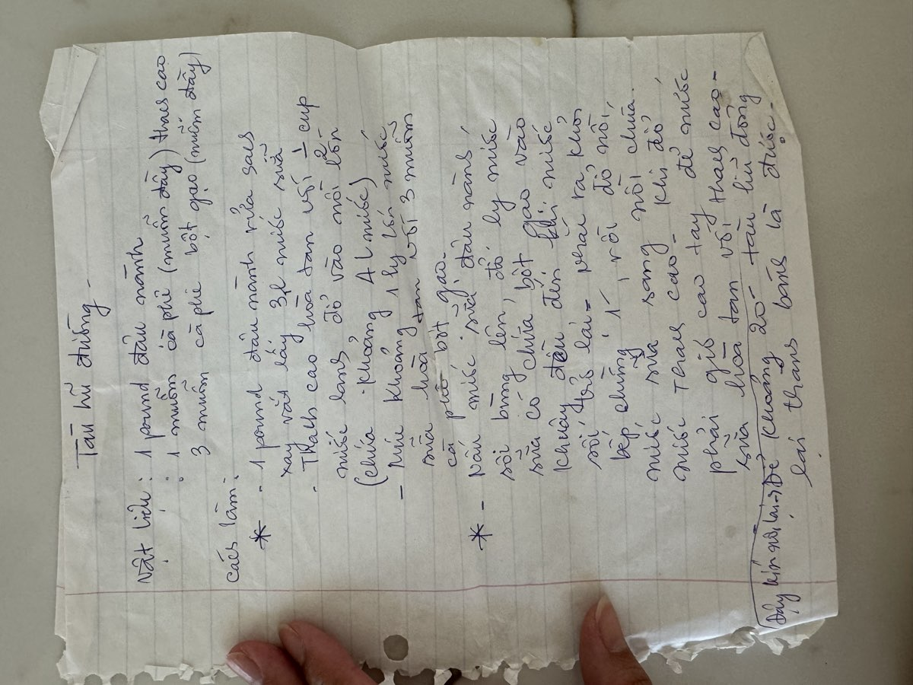

← Back to recipes

Tàu Hũ Đường
Sweet Tofu Dessert
From Mẹ — Oanh
Nguyên liệu · Ingredients
- 1 pound dried soybeans (đậu nành)
- 1 teaspoon rice starch (bột gạo)
- 3 teaspoons thạch cao (gypsum powder / calcium sulfate)
- 10–12 cups water (for grinding and cooking)
Nước đường gừng · Ginger Syrup
- 1 cup sugar
- 2 cups water
- 1 knob fresh ginger, sliced and lightly smashed
- 2 pandan leaves, tied in a knot (optional)
Cách làm · Instructions
- Soak the soybeans overnight in plenty of water — at least 8 hours. The beans should double in size and feel soft when you press them between your fingers. Drain and rinse well.
- Blend the soaked beans with water in batches. Use about 2 cups of water per cup of beans. Blend until very smooth — the smoother you grind, the silkier the tàu hũ will be.
- Strain the soy milk through a cheesecloth or fine mesh bag. Squeeze firmly to extract as much milk as possible. Discard the pulp (or save it for other cooking).
- Bring the strained soy milk to a boil in a large pot, stirring frequently to prevent scorching on the bottom. Skim off any foam that rises to the surface. Reduce heat and simmer for 10 minutes.
- While the soy milk heats, dissolve the thạch cao and rice starch in about ¼ cup of warm water. Stir until completely dissolved — there should be no gritty bits remaining.
- This is the most important step. Pour the hot soy milk from a height into a large bowl or pot that already contains the thạch cao solution. Pour in one steady stream from above — the force of the pour helps the coagulant distribute evenly. Do not stir after pouring.
- Cover the pot with a lid and let it sit undisturbed for 20–30 minutes. The soy milk will quietly set into a soft, silky custard. When you tilt the pot slightly, it should hold together like a tender jelly.
- Make the ginger syrup: Combine sugar, water, sliced ginger, and pandan leaves in a small saucepan. Bring to a boil, stirring until sugar dissolves. Simmer for 10 minutes until fragrant, then strain.
- To serve, use a wide flat spoon to gently scoop the tàu hũ into bowls — handle it delicately, it's as tender as it looks. Ladle the warm ginger syrup over the top. Serve immediately.
Công thức gốc · Original handwritten recipe

❦
A recipe from Mẹ's kitchen